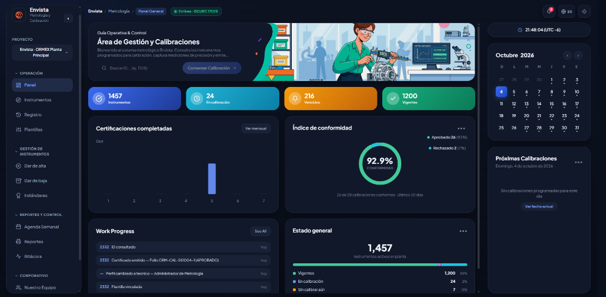
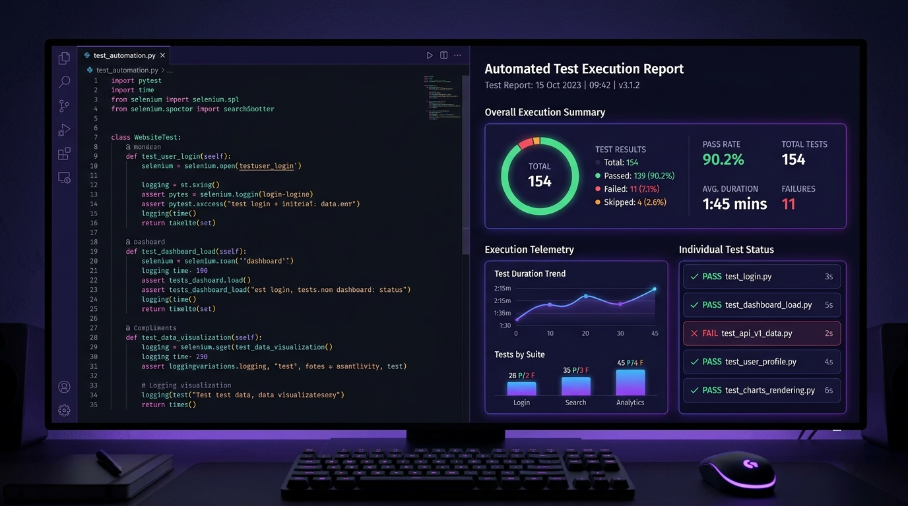

Eduardo Quijano
Ingeniero Mecatrónico &
Desarrollador Web
“Automatizando lo repetitivo, blindando lo crítico.”
Impulsando Empresas
A Través De La
Innovación Digital
Ingeniero mecatrónico con experiencia en control de calidad de software (QA), automatización de pruebas y desarrollo web. Me apasiona crear soluciones innovadoras y eficientes que impulsen el crecimiento de las empresas.
Mi Perfil Profesional & Visión
Hola, soy Carlos Eduardo Quijano González—un ingeniero apasionado por la tecnología, la automatización y la calidad de software. Con un profundo entusiasmo por la innovación y la ingeniería, me esfuerzo en dar vida a soluciones técnicas de manera eficiente y significativa.
A lo largo de los años, he trabajado en diversos proyectos, combinando la resolución de problemas con la estrategia técnica para asegurar el éxito operativo y digital. Ya sea a través del control de calidad, el soporte de infraestructura o la educación tecnológica, mi objetivo es superar mis límites y evolucionar constantemente.
Pensador Analítico
Innovador Digital
Soluciones Técnicas Que
Impulsan Tu Operación
Ejecución de pruebas funcionales y de regresión para garantizar la máxima calidad y confiabilidad del software antes de su implementación.
Optimización de procesos mediante Selenium y Python, además de validación de endpoints REST y estructuras de datos con Postman.
Creación de soluciones web interactivas y personalizadas enfocadas en resolver necesidades operativas reales dentro de la empresa.
Mantenimiento preventivo y correctivo de redes y sistemas tecnológicos para asegurar la continuidad operativa de los servicios.
Formación académica en áreas de computación, programación y robótica, transmitiendo conocimientos técnicos con un enfoque práctico.
Mis Superpoderes
Proyectos Donde la Ingeniería
Se Conecta con el Software


¿Tienes alguna pregunta?
Estoy a tu disposición.
Datos de Contacto
Ubicación
Mérida, Yucatán
Lo Que Dicen Colegas
& Líderes De Equipo
“Carlos demostró un compromiso y disciplina intachables desde el primer día. Su capacidad para colaborar con el equipo técnico, resolver con autonomía y aportar soluciones sólidas lo convirtió en un elemento clave en Sunwise.”
“Trabajar con Carlos en aseguramiento de calidad fue una gran experiencia. Su rigor técnico en la automatización de pruebas con Selenium y la validación profunda de APIs REST nos ahorró incontables horas de reproceso.”
“En SITAI, Carlos se destacó por su gran capacidad de diagnóstico y resolución en infraestructura de redes. Es un profesional confiable, puntual y con un enfoque metódico para mantener los sistemas siempre operativos.”
“Tiene una notable habilidad para asumir responsabilidades complejas sin titubear. Sumamente organizado, analítico y enfocado en resultados; cuando Carlos se compromete con una entrega técnica, la cumple.”
“Carlos aporta muchísima claridad técnica en cada sprint. Siempre anticipa riesgos en los casos de prueba, documenta a detalle y facilita enormemente la integración continua en los proyectos de software.”
“No busca complejidades innecesarias: comprende los requerimientos de negocio, diseña pruebas automatizadas eficientes y entrega soluciones que funcionan en producción con total estabilidad.”
“Su pasión por la tecnología y su paciencia didáctica inspiraban constantemente a los estudiantes en robótica y programación. Un colega con una enorme ética profesional, empatía y gran vocación.”
“Combina el rigor del pensamiento analítico de la ingeniería mecatrónica con la agilidad del desarrollo web y QA. Es un profesional en quien siempre puedes delegar tareas de alta exigencia técnica.”